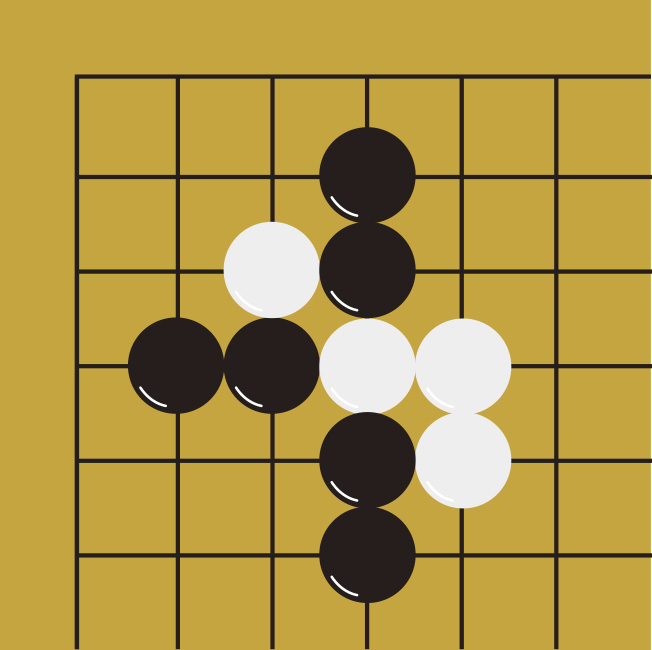

Gomoku AI

This is a task that I had to implement an evaluation function and an Agent-based AI using AB pruning.
Gomoku is a game that 2 players take turns to make moves and try to make 5 stones in a row.
Gomoku is a game that 2 players take turns to make moves and try to make 5 stones in a row.
Methodology:
The hard part of this project is the efficiency part.
If an AI needs a lot of time to process, then it is not usable in real life.
Thus, to increase efficiency, I implemented a few strategies.
- Not to dive into every point on the board but only points that have as least 1 stone beside it
- Alpha-Beta Pruning instead of minmax method
- Define states by matching all possible states
- Control the depth of Alpha-Beta Pruning
Result:
The result is defined by competing with AI maded by other people.
With the implementation, I adjusted the searching depth to a reasonable value and got a excellent result.